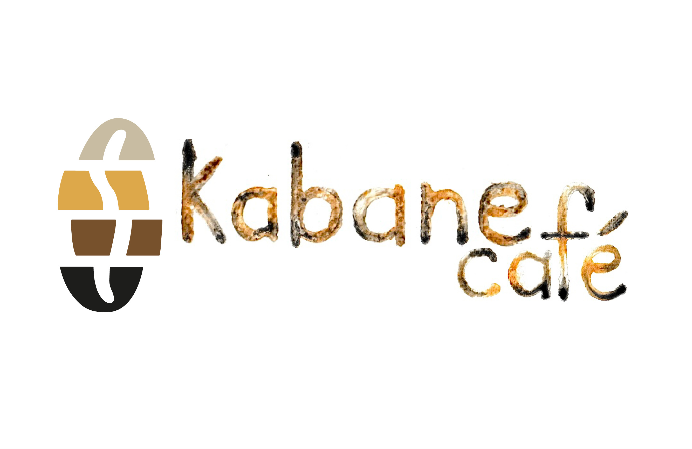
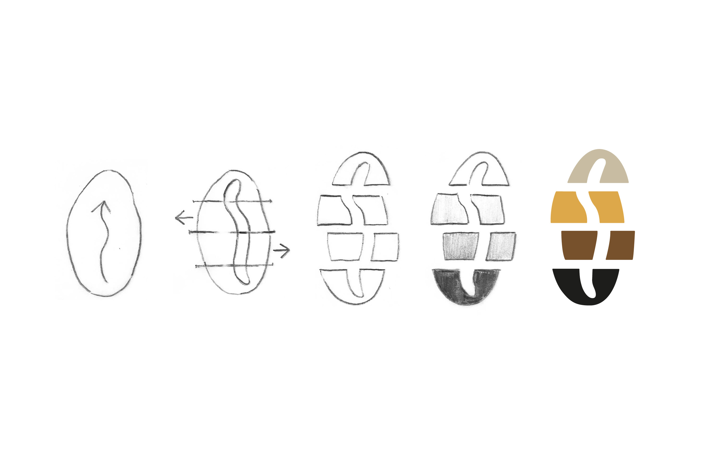
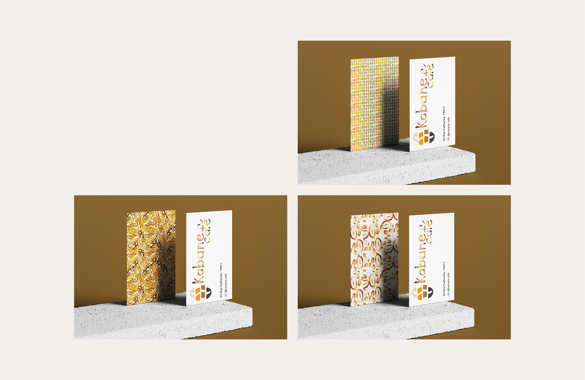
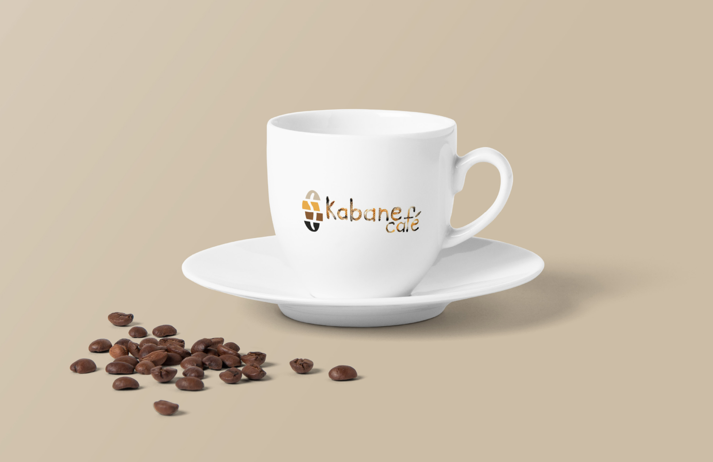
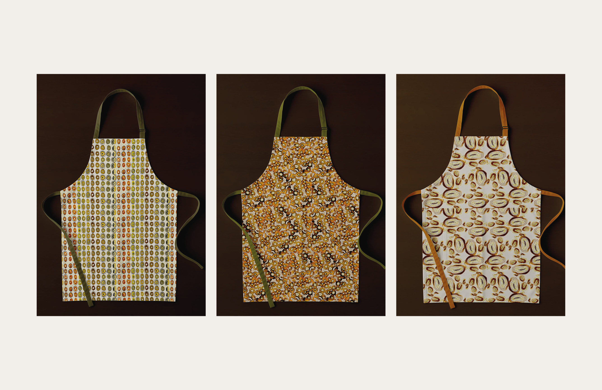

Kabane café
Technique : Logo vectoriel, Aquarelle
Création d’une identité visuelle pour Kabane Café, spécialisé dans les boissons d’exception. L’univers graphique évoque la dimension sensorielle du lieu à travers des motifs à l’aquarelle. Le logotype associe une graine de café vectorisée à une signature manuscrite, alliant finesse et chaleur.




